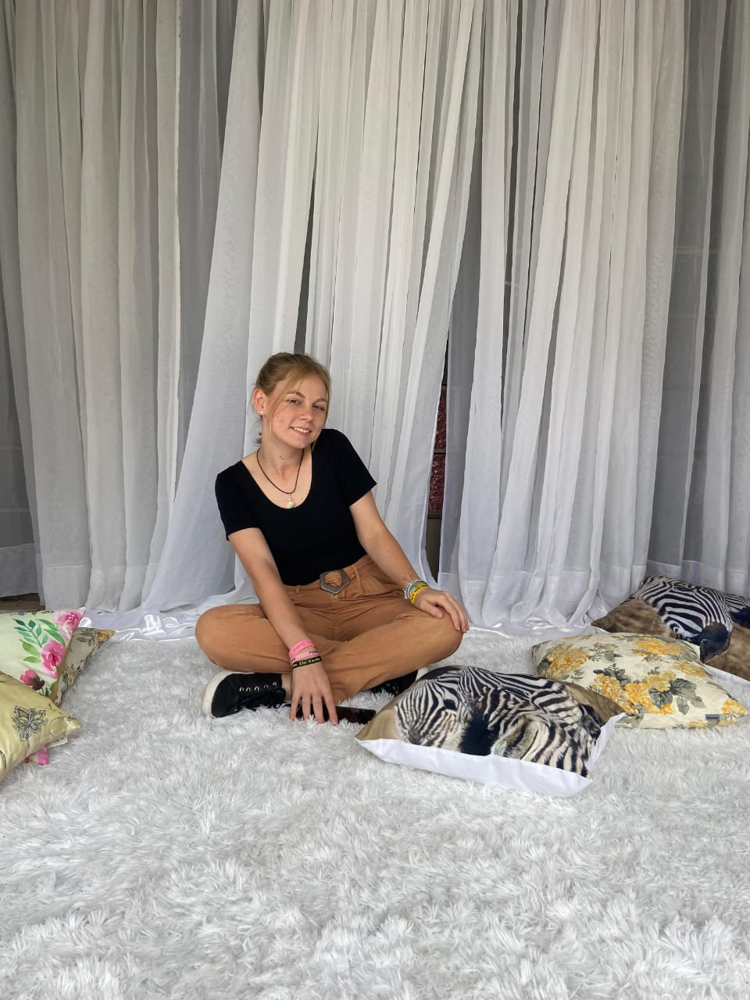

Objetivo
Este blog tem como objetivo demonstrar a importância de uma vida saudável e responsável, além da disciplina e constância em uma rotina organizada. Os conteúdos abordados em nosso projeto são fundamentais devido à necessidade de organização e os benefícios que uma boa rotina pode trazer em termos de bem-estar e desempenho, contribuindo para a formação adequada do indivíduo. das páginas do blog, sendo elas:
• Rotina – explicando sua importância e oferecendo sugestões de melhorias, com um formulário interativo onde o usuário responde perguntas sobre sua rotina e recebe dicas baseadas nas respostas;
• Procrastinação – explicando o que é, suas causas e oferecendo dicas para reduzir esse comportamento em áreas específicas;
• Organização – destacando a importância de organizar os ambientes e sugerindo melhorias;
• Estudos e Trabalho – com sugestões para obter melhores resultados acadêmicos e profissionais por meio de uma boa rotina e organização;
• Exercícios Físicos – abordando a importância dos cuidados físicos para a saúde e o bem-estar;
Esperamos contribuir demonstrando a importância da disciplina e organização para uma vida mais leve e funcional, além de, por meio das sugestões, incentivar boas mudanças.
Desenvolvimento
O desenvolvimento do projeto iniciou com a divisão de funções: cada integrante ficou responsável pela pesquisa e desenvolvimento de uma das páginas do blog. Após a divisão de funções, iniciamos a busca por conteúdo e consultamos trabalhos acadêmicos, blogs e livros que contribuíram para o aprofundamento dos temas abordados, além do conteúdo principal do blog. Com as pesquisas concluídas, começamos o desenvolvimento do blog.Integramos os conhecimentos adquiridos nas disciplinas de desenvolvimento web – HTML e CSS, para a estrutura e design do blog; programação – para interação com o usuário e sugestões para a rotina; biologia – para a compreensão da estrutura humana e suas necessidades; educação física – para desenvolver a seção sobre exercícios físicos e sua importância; e língua portuguesa – para garantir uma escrita correta e de fácil compreensão. Utilizando as plataformas e conhecimentos adquiridos nas disciplinas do curso técnico, criamos os arquivos de cada página, definimos em conjunto o design e iniciamos o desenvolvimento das páginas. Concluído o desenvolvimento, publicamos o blog no GitHub Pages.
História
Este blog foi realizado nos laboratórios de Informática para Internet no campus Araquari - IFC. Realizamos este projeto durante o segundo trimestre no decorrer das aulas de Projeto Integrador, com o auxílio dos professores do técnico.
A ideia do blog foi proposta pelo professor de Projeto Integrador, Mehran Misaghi. Através .Sua origem "Vita Ordinata" vem do latim e significa Vida Organizada.
Nosso time é formado por:
-
Amanda Ribeiro da Luz
Nasci em Joinville, Santa Catarina.
Tenho 15 anos.
Estudo no IFC, Campus Araquari.
Curso técnico em Informática para Internet.
amanda.ribeiro.da.luz.201@gmail.com -

Breno Otávio Rohregger
Nasci em Joinville, Santa Catarina.
Tenho 16 anos.
Estudo no IFC, Campus Araquari.
Curso técnico em Informática para Internet.
brenoot0405@gmail.com -

Heloisa de Farias Longhi
Nasci em Joinville, Santa Catarina.
Tenho 16 anos.
Estudo no IFC, Campus Araquari.
Curso técnico em Informática para Internet.
heloisa.longhi.ifc@gmail.com -

José Carlos Mar Pereira Neto
Nasci em Barra do Sul, Santa Catarina.
Tenho 15 anos.
Estudo no IFC, Campus Araquari.
Curso técnico em Informática para Internet.
jc.mpneto@gmail.com -

Sara Schulz
Nasci em Santa Rosa, Rio Grande do Sul.
Tenho 16 anos.
Estudo no IFC, Campus Araquari.
Curso técnico em Informática para Internet.
saraschulz2805@gmail.com -

Yasmin Kauany de Oliveira
Nasci em Joinville, Santa Catarina.
Tenho 18 anos.
Estudo no IFC Campus Araquari.
Curso técnico em Informática para Internet.
yass.oliveiraifc@gmail.com